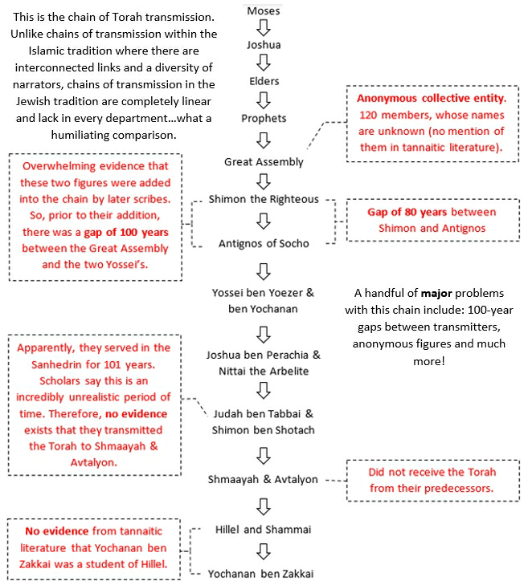
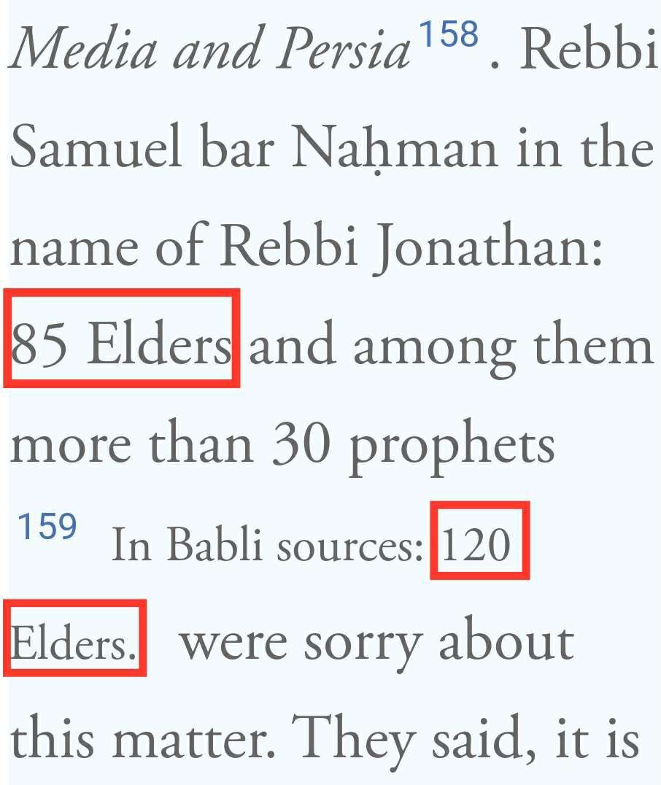
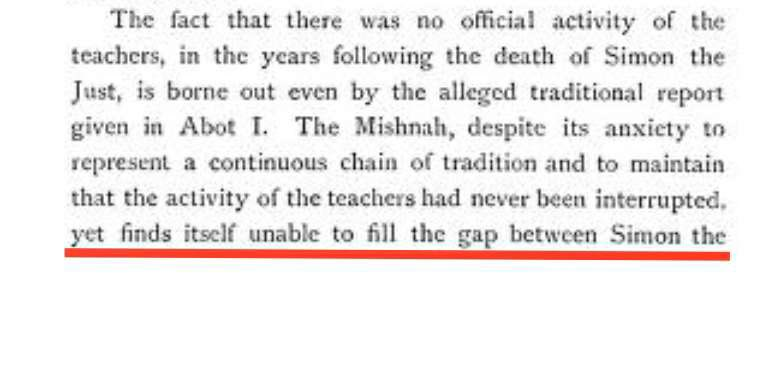
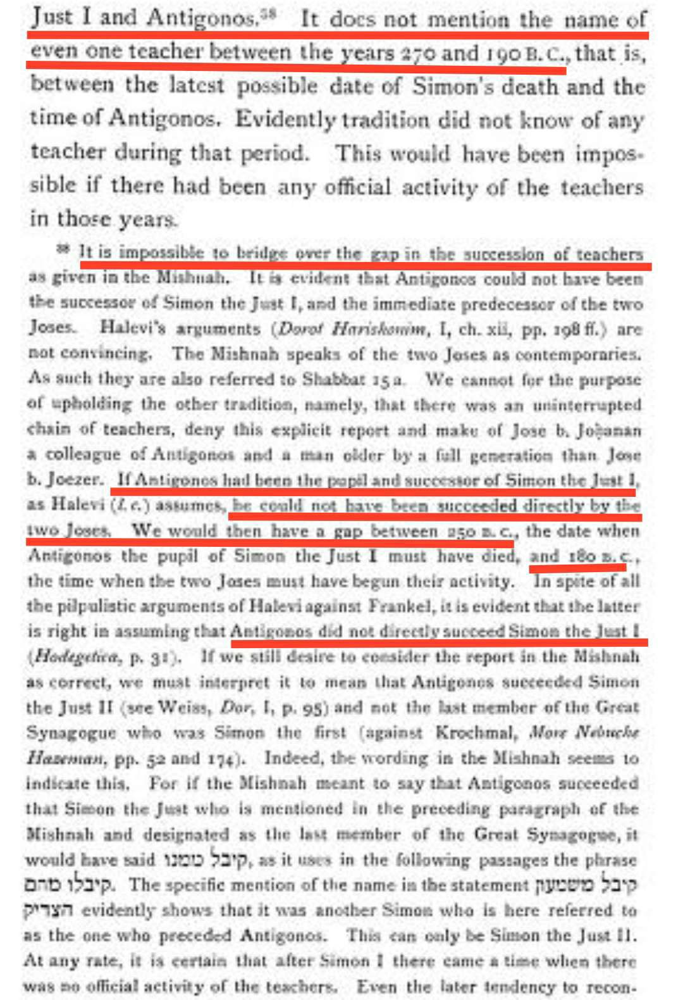
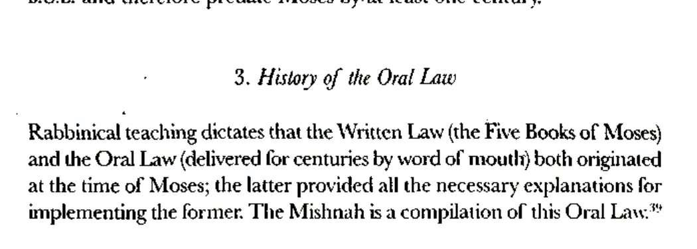
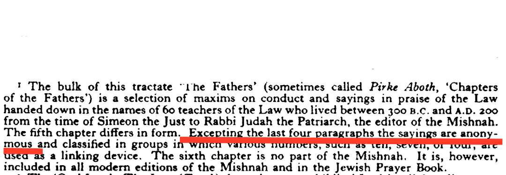
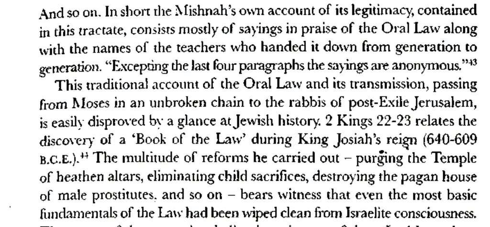

https://www.academia.edu/47921425/The_Chains_of_Torah_Transmission_Proof_of_Preservation_or_Cunning_Concoction

The great assembly here it says they are 120.
1) as it says we dont have their names.
2) there is a difference of opinion on how many they were (so no accurate information)

For the other stuff saying they served 101 years FORGET IT. it is a bad argument and u should throw it away.
Oh and for simon the just and antignos. Antignos is MAJHUL completely. They dont know who he is apart from "a student of simon" (which is based upon the chain lol) they dont know when he was born nor when he died nor his parents nor his children nor his students nor his teachers nor anything.
And there are problems with the year between simon and antignos


Debunking Transmission of the Oral Law



Reference: The history of the quran and a comparison with old and New Testament
By Shaykh Azami
https://m.youtube.com/shorts/ejLjDEu6nLg
YouTube
The Muslim Lantern
Is The Jewish Torah Preserved?! Muhammed Ali
https://m.youtube.com/watch?v=SG-sg1_zgpo&t=1s&pp=ygUpcmVmdXRpbmcgamV3aXNoIHRyYW5zbWlzc2lvbiBvZiB0aGUgdG9yYWg%3D
YouTube
EFDawah
Muslims Challenge Jew On The Torah (He Gets Frustrated) | Part 1
https://m.youtube.com/watch?v=2UWoZv9Hsbk
YouTube
EFDawah
Questioning the Jewish Narrative | Part 2